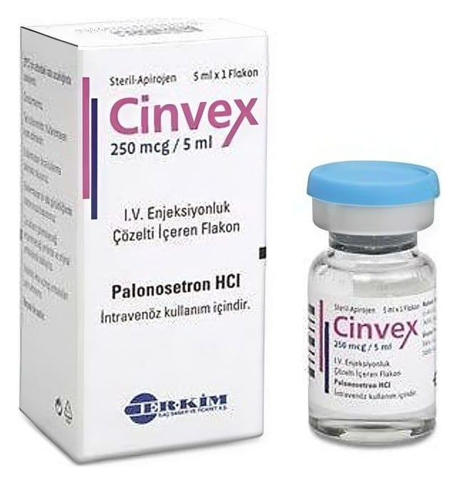

Cinvex 250 mcg/5 ml I.V. Enjeksiyonluk Çözelti İçeren Flakon, Flakon, 1 Adet

Ne için kullanılır
KT · Bölüm 1 CINVEX, damar içine uygulanan renksiz bir çözeltidir ve serotonin antagonistleri (5HT
) olarak bilinen bir ilaç grubuna dahildir. CINVEX, 5 ml çözelti içeren cam bir flakon içinde ambalajlanmıştır. Her bir flakon bir doz içerir. CINVEX, kanserin ilaçla tedavisi (kemoterapisi) ile bağlantılı bulantı ve kusmanın önlenmesinde kullanılır.